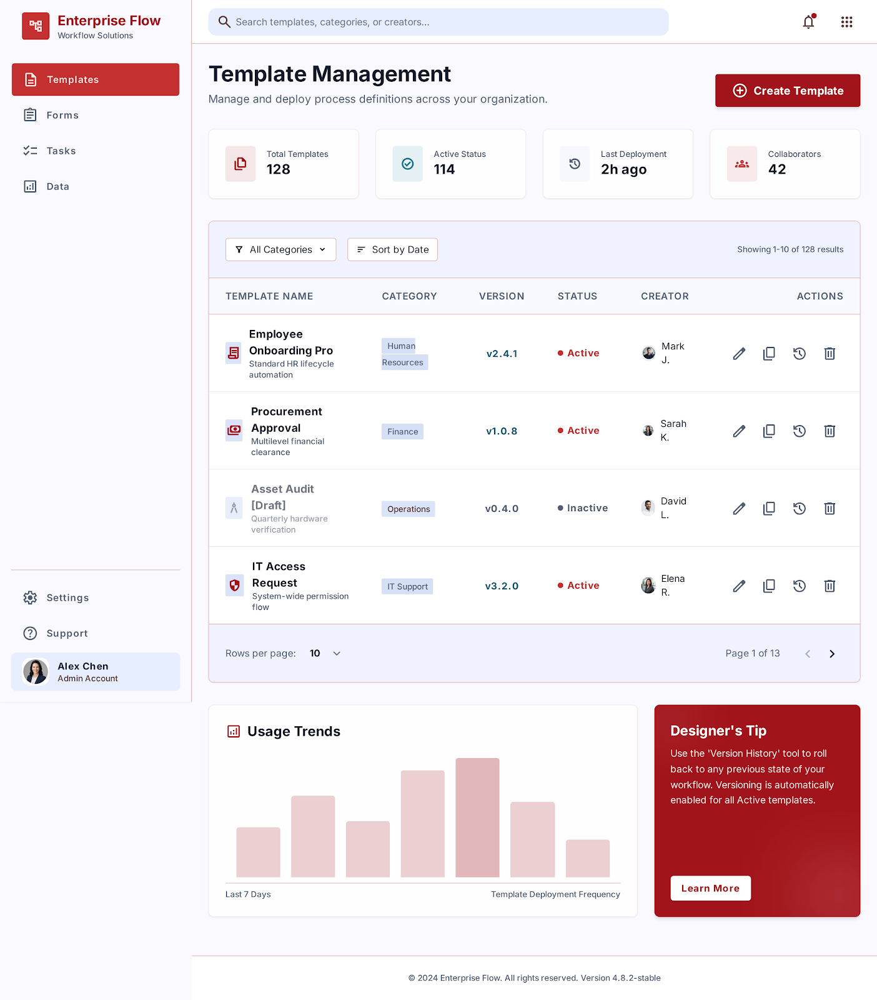
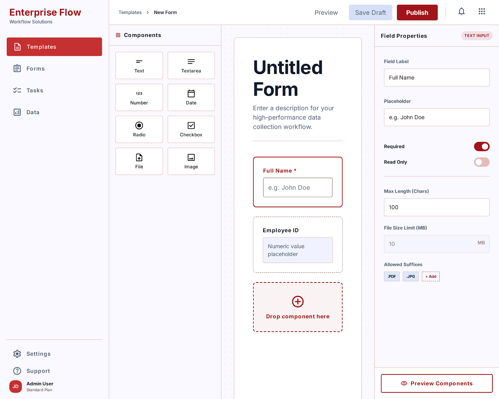
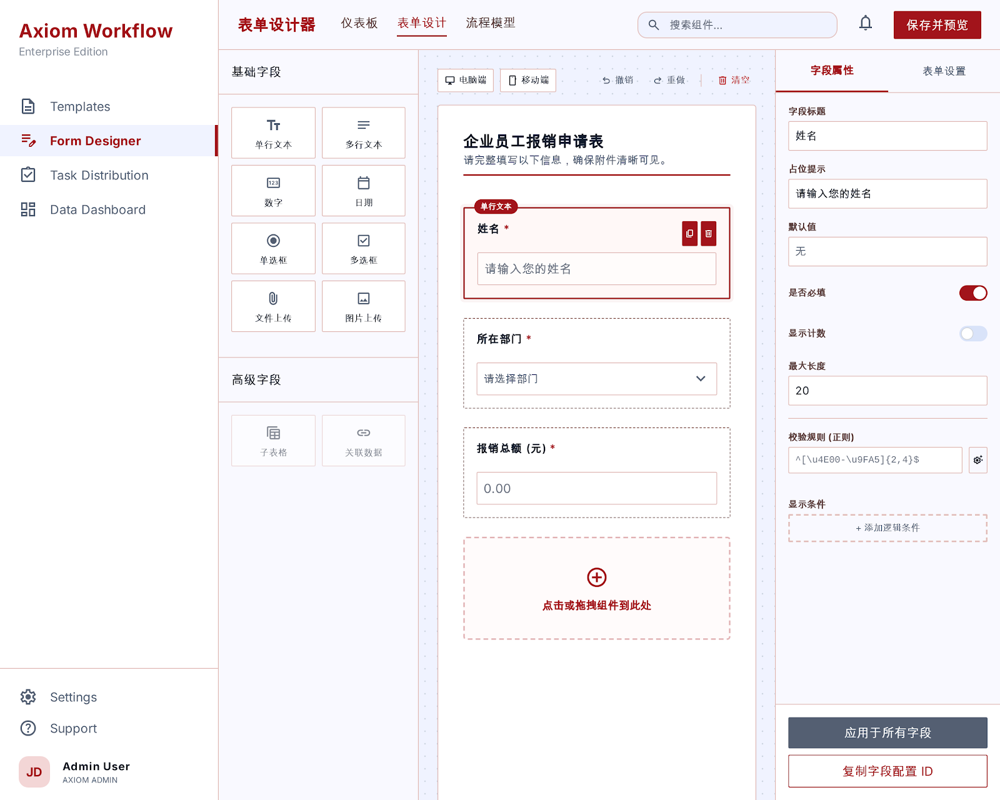
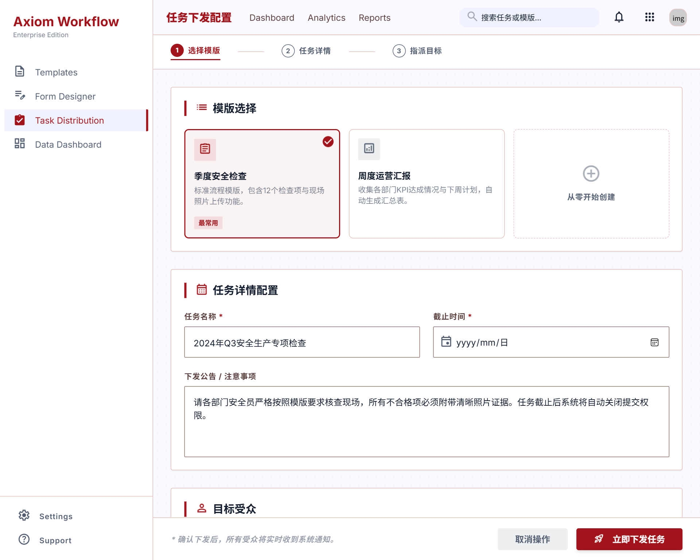
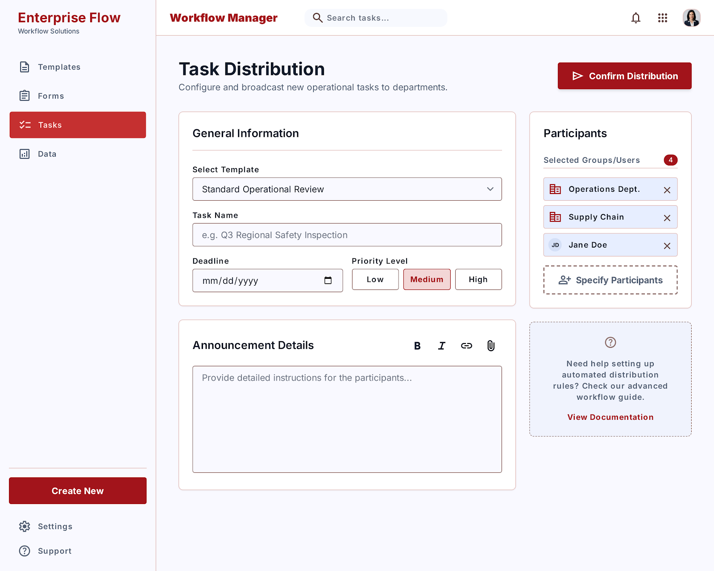
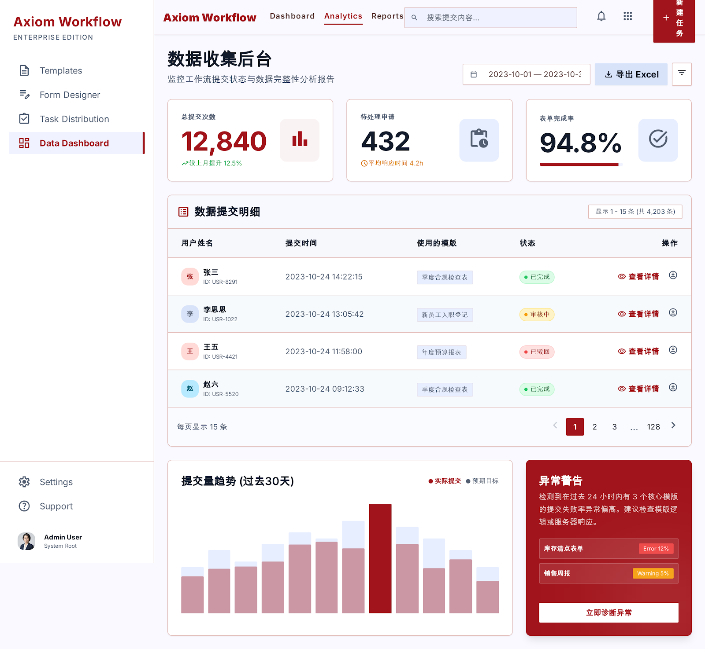
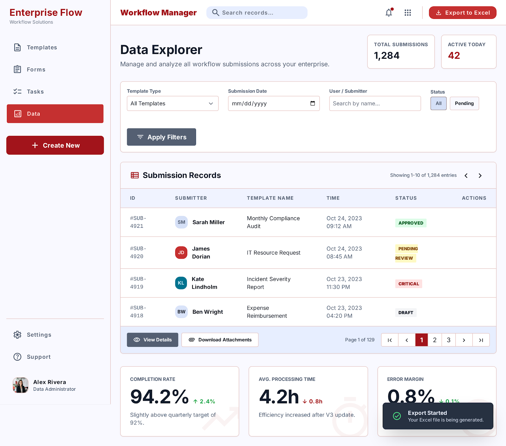

线性顺序流转工作流系统
第一章 · 系统概述
本系统是一套线性顺序流转工作流平台，管理员先设计流程模板（节点链 + 节点表单），再基于模板创建任务并配置周期与人员；系统按周期自动生成期次，每个期次为每位任务人员创建一条独立的提交任务，人员从“开始”节点起按节点链顺序流转：当前节点处理人填写表单、提交时指定下一节点处理人，依此推进直到“结束”节点任务完成。
本系统不是“多人同时填一张表”的并行收集，而是“一步一步往前走”的顺序审批/填报工作流。每个节点由不同人处理，每个节点填写不同的字段。
1.1 核心概念
流程模板
业务图纸：节点链 + 每个节点要填写的字段定义。支持版本管理、启用停用、复制。
任务
基于模板的长期工作项，含周期配置、人员配置、模板级字段值。
期次
任务按周期生成的每一轮，如“2026-08 期次”。期次内为每位人员创建独立人员任务。
人员任务
每个人员在某一期次中需要独立完成的完整流程链。
节点
流程链中的步骤，分为开始节点 / 中间节点 / 结束节点，每个节点可配置不同表单字段。
流转
当前节点处理人提交后，任务指针移动到下一节点并指定下一处理人；支持退回重做。
模型关系图
flow_template（模板）
├── flow_template_node（节点链）
├── flow_template_field（节点字段）
└── flow_template_version（版本快照）
flow_dispatch（任务配置）
├── flow_dispatch_config（周期配置：每周/每月/每季度/单次）
├── flow_task_member（任务人员）
└── flow_task_dispatch（期次）
├── flow_task_dispatch_node（期次节点快照）
└── flow_task（人员任务）
├── flow_task_node（流转节点记录）
├── flow_form_record（表单填报记录）
├── flow_form_data（字段值）
└── flow_task_log（流转/催办日志）1.2 角色与权限
| 角色 | 权限范围 | 典型操作 |
|---|---|---|
| 超级管理员 | 全局：用户管理、系统配置、样例设置 | 新增/编辑/删除系统用户；设置模板/任务/配置模板是否为样例 |
| 流程管理员 | 业务配置：模板设计、任务管理、数据查看 | 设计流程模板与表单；创建任务、配置周期与人员；生成期次；查看流转数据 |
| 处理人 | 执行：接收待办、填写表单、提交流转 | 在“任务处理”页处理当前节点；指定下一节点处理人；查看流转进度 |
超级管理员在 application.yml 中配置：system.super-admin.emp-no 与 system.super-admin.real-name。默认 EMP001 / 张三。
第二章 · 技术架构
2.1 技术栈
| 层级 | 技术 | 版本/说明 |
|---|---|---|
| 前端框架 | Vue.js | 2.6.10 |
| UI 组件库 | Element UI | 2.13.2（中文） |
| 状态管理 | Vuex | 3.1.0 |
| 路由 | Vue Router | 3.0.6 |
| HTTP 客户端 | Axios | 0.18.1 |
| 前端脚手架 | vue-admin-template | 4.4.0 |
| 构建工具 | Vue CLI | 4.4.4 |
| CSS 预处理 | Sass | 1.26.8 |
| 后端框架 | Spring Boot | 3.4.2 |
| Java 版本 | Java | 21 |
| ORM | MyBatis-Plus | 3.5.5 |
| 认证 | JWT (jjwt) | 0.11.5，24 小时过期 |
| 数据库 | MySQL | 8.0+，utf8mb4 |
| 构建工具 | Maven | 3.9+ |
前后端通信
浏览器 http://localhost:9528
↓ 开发代理 /dev-api
Vue dev server
↓ 转发
后端 http://localhost:9000/house-service
↓ JDBC
MySQL jdbc:mysql://localhost:3306/flow2.2 数据模型
数据库 flow 共 17 张业务表，核心表说明如下：
| 表名 | 用途 | 关键字段 |
|---|---|---|
sys_user | 系统用户 | username, emp_no, real_name, dept_id, dept_name, password, status |
flow_template | 流程模板主表 | template_name, category, version, status, creator_id, is_sample |
flow_template_node | 模板节点链 | template_id, node_name, sort_num, node_type(1/2/3) |
flow_template_field | 节点表单字段 | template_id, node_id, field_key, field_label, field_type, required, enum_options |
flow_template_version | 模板版本快照 | template_id, version, version_desc, config_snapshot(json) |
flow_dispatch | 任务配置 | template_id, template_data(json), task_name, status |
flow_dispatch_config | 任务下发配置 | task_id, cycle_type, cycle_day, deadline_days, urge_days |
flow_task_member | 任务人员 | task_id, user_id |
flow_task_dispatch | 期次 | task_id, period_no, period_name, start_time, end_time, manual_flag |
flow_task_dispatch_node | 期次节点快照 | dispatch_id, node_id, fields_json（防止模板升级影响历史期次） |
flow_task | 人员任务 | dispatch_id, status, current_node_id, current_handler_id |
flow_task_node | 流转节点记录 | task_id, node_id, handler_user_id, submit_status, action, reject_reason |
flow_form_record | 表单填报主记录 | task_id, node_id, task_node_id, user_id, is_draft |
flow_form_data | 字段值明细 | record_id, field_id, field_key, field_value |
flow_task_log | 流转/催办日志 | task_id, dispatch_id, log_type, content, operator_name |
flow_dispatch_config_template | 下发配置模板库 | config_name, cycle_type, cycle_day, deadline_days, urge_days |
attach | 附件表 | biz_id, file_name, ecs_url, creator |
第三章 · 部署启动
3.1 环境要求
| 组件 | 版本/要求 |
|---|---|
| JDK | 21 |
| Maven | 3.9+ |
| Node.js | 16+（推荐 22 LTS） |
| MySQL | 8.0+ |
3.2 数据库初始化
-
启动 MySQL
确保本地 MySQL 服务已运行，默认使用 root / 12345。
-
执行建库脚本
mysql -uroot -p12345 < flow_schema.sql该脚本会创建数据库
flow及全部 17 张表。 -
导入样例模板（可选）
mysql -uroot -p12345 < flow_template5_import.sql导入整改复杂模板样例（template_id=5），含完整节点与字段设计。
后端连接配置位于 flow-service/src/main/resources/application.yml，默认：jdbc:mysql://localhost:3306/flow，用户名 root，密码 12345。请根据实际环境修改。
3.3 启动后端
cd flow-service
mvn spring-boot:run后端服务默认监听 http://localhost:9000/house-service。启动成功后将看到 Spring Boot 启动日志。
3.4 启动前端
cd flow-front
npm install
npm run dev前端开发服务器默认监听 http://localhost:9528。浏览器访问该地址即可进入登录页。
默认账号
| 账号 | 密码 | 姓名 | 角色 |
|---|---|---|---|
| zhangsan | 123456 | 张三 | 超级管理员 |
| lisi | 123456 | 李四 | 处理人 |
系统预置约 15 个测试用户（EMP003~EMP017），便于测试多人员流转。
生产构建
cd flow-front
npm run build:prod # 生成 dist/ 目录第四章 · 管理员操作
管理员（超级管理员 / 流程管理员）通过左侧菜单进入各管理模块：用户管理、模板管理、任务管理、数据展示等。
4.1 用户管理
仅超级管理员可见。用于维护系统用户账号，是流程处理人的基础数据来源。
- 点击左侧菜单“用户管理”。
- 点击“新增用户”按钮，填写账号、员工号、姓名、部门、手机号、密码、状态。
- 状态选择“正常”后该用户可登录系统并作为处理人。
- 编辑/删除：在列表右侧操作列点击对应图标。
4.2 流程模板管理
流程模板是系统的核心“图纸”。管理员在此创建模板、启用/停用、复制、删除，并进入表单设计器设计节点链与字段。

- 新建模板：点击“创建模板”，填写模板名称、分类、说明，保存后进入设计器。
- 设计流程：点击列表中“设计”按钮，进入三栏布局的流程设计器。
- 启用/停用：在列表中切换状态开关。停用后无法被新任务引用，但已下发的任务不受影响。
- 复制模板：点击复制图标，系统会生成一份完全相同的模板（含节点与字段），便于快速复用。
- 删除模板：仅当模板未被任何任务引用时才可删除。
- 版本记录：保存流程时选择“保存为新版本”，旧配置会归档到版本记录，支持回溯。
字段类型说明
| 字段类型 | 用途 | 必填支持 |
|---|---|---|
| 单行文本 text | 短文本输入 | 是 |
| 多行文本 textarea | 长文本、备注 | 是 |
| 数字 number | 整数或小数 | 是 |
| 日期 date | 日期选择 | 是 |
| 单选 radio | 枚举单选 | 是 |
| 多选 checkbox | 枚举多选 | 是 |
| 文件 file | 附件上传 | 是 |
| 图片 image | 图片上传 | 是 |
4.3 表单设计器
设计器采用三栏布局，管理员可在此完成节点链设计与字段配置。


- 左栏：节点链 — 显示全部节点，每项含节点名、类型徽章、字段数。支持上下移动、删除。
- 中栏：字段画布 — 当前选中节点的字段列表。可从左侧拖拽或点击添加字段，支持排序、删除。
- 右栏：属性面板 — 上半部分设置当前节点属性（名称、类型、提示、填写说明、说明文件、下一步处理人提示）；下半部分设置选中字段属性（标签、占位、必填、最大长度、枚举选项等）。
首节点强制为“开始节点”，末节点强制为“结束节点”。中间节点至少保留一个，否则无法构成完整流程链。
点击“保存流程”后弹窗选择：保存到当前版本（覆盖，版本号不变）或 保存为新版本（版本号 +1，旧配置归档）。已下发任务锁定当时版本，模板升级不会影响历史任务。
4.4 任务配置
任务基于模板创建，配置周期、人员后，系统即可按期自动生成期次。任务管理页采用折叠面板，一屏概览全部任务。


- 点击“任务管理”菜单 → “新建任务”。
- 基本信息：选择流程模板（仅启用的模板），填写任务名称、任务说明，填写模板级字段值（任务级配置）。
- 下发配置：选择周期类型（每周/每月/每季度/单次）、触发日、每期截止天数、提前催办天数。可从“下发配置模板库”一键拉取常用配置。
- 配置人员：多选任务人员，保存后返回任务管理页。人员可随时变更。
下发配置模板库
任务管理页右上角入口进入“下发配置模板管理”。维护常用的周期配置，如“每月 1 号下发，7 天截止，提前 2 天催办”。新建任务时一键拉取，避免反复配置出错。删除模板不影响已拉取到任务上的配置。
4.5 期次下发
任务创建后不会立即生成人员任务，需要管理员手动或系统自动生成期次。每个期次为任务人员每人创建一条独立的提交任务。
- 在任务管理页展开目标任务。
- 点击“生成期次”按钮，打开生成弹窗。
- 选择生成方式：
- 立即下发：生成当前应下发的期次（如每月 1 号触发，8 月 6 日操作则补发 2026-08 期次）。
- 下一期次下发：生成下一个周期的期次（如 2026-09）。
- 手动临时期次：自定义期次名与起止时间，不影响后续自动下发编排。
- 确认人员列表：默认抄用任务配置人员，可临时增加或删除本期次人员。
- 点击“确认下发”，系统为每位人员创建独立任务，并写入期次节点快照。
系统内置定时任务 PeriodAutoDispatchTask，每天 08:00 自动扫描启用中的周期任务，到期时自动生成期次。手动生成适合临时期次或立即触发场景。
期次管理
展开任务后，期次列表显示期次名、成员数、状态、起止时间、下发时间。支持：
- 查看人员：进入期次人员页，查看每位成员的处理人、当前节点、进度。
- 修改截止时间：延长或缩短特定期次的截止时间。
- 删除期次：删除空期次或无期次人员任务的期次。
第五章 · 处理人操作
处理人登录后默认进入“任务处理”页，查看自己的待办任务并提交流转。
5.1 我的待办
左侧菜单“任务处理”展示当前登录用户作为当前处理人的全部待办，按任务分组，可快速查看任务名称、期次、当前节点、截止时间。
- 登录系统，默认跳转至任务处理页。
- 在待办卡片或列表中找到需要处理的任务。
- 点击“处理”按钮，打开处理弹窗。
5.2 节点提交与流转
处理弹窗是处理人完成节点填报、推进流程的核心界面。弹窗包含：
- 任务信息：期次名、任务名、截止时间等。
- 流程链：横向步骤条，展示已通过 / 处理中 / 退回 / 未到达节点。
- 节点填写说明：设计器配置的说明文字与附件。
- 动态表单：根据当前节点字段配置渲染的输入组件。
- 操作历史：右侧时间线，展示通过、退回记录与意见。
- 填写当前节点表单，红色星号表示必填字段。
- 非结束节点需指定“下一节点处理人”（支持多选，每人一条独立分支）。
- 点击“通过”按钮，二次确认后提交。
- 系统自动流转：当前节点标记为已处理，下一节点处理人收到待办。
- 点击“退回”按钮，选择退回目标节点（仅可退回到已到达过的前置节点）。
- 填写退回原因（建议），提交后目标节点处理人重新收到待办。
- 退回后表单数据保留，处理人可修改后重新提交。
若某节点指定了多名处理人，任一人提交即完成该节点，其余待办自动消解，避免产生重复流程。
点击“暂存”可保存当前填写内容，不校验必填、不流转。下次打开时可继续编辑。
第六章 · 数据监控
管理员通过“数据展示”菜单查看全局填报数据、趋势、人员提交统计，并可下钻到具体任务的期次、人员、流程详情。


- 统计卡：总提交次数、待处理申请、表单完成率、任务总数、进行中期次等。
- 提交量趋势：按日/月/季度/年展示提交量变化。
- 数据提交明细：查看每条填报记录的状态、提交人、模板、时间。
- 人员提交汇总：按人员统计提交次数、完成率、平均处理时长。
- 流程详情下钻：从任务管理页 → 期次人员 → 流程详情，查看完整节点链、表单数据、操作历史。
催办
在期次人员页，对进行中的成员可点击“催办”按钮，二次确认后系统记录催办日志（flow_task_log.log_type=2）。系统每天 09:00 也会自动催办截止前 urge_days 天的任务。
第七章 · API 接口速查
后端接口统一前缀 /house-service，开发环境下前端通过 /dev-api 代理。所有业务接口需在请求头携带 Authorization: Bearer {token}。
7.1 认证与用户
| 方法 | 路径 | 说明 |
|---|---|---|
| POST | /user/login | 登录 |
| GET | /user/info | 当前用户信息 |
| POST | /sys-user/list | 用户分页 |
| POST | /sys-user/add | 新增用户 |
| PUT | /sys-user/update | 更新用户 |
| DELETE | /sys-user/delete/{id} | 删除用户 |
7.2 流程模板
| 方法 | 路径 | 说明 |
|---|---|---|
| POST | /flow-template/list | 模板分页 |
| GET | /flow-template/{id} | 模板详情 |
| POST | /flow-template/save | 新建模板 |
| PUT | /flow-template/update | 更新模板 |
| PUT | /flow-template/toggle-status/{id} | 启用/停用 |
| PUT | /flow-template/save-flow | 保存流程设计 |
| GET | /flow-template/versions/{id} | 版本记录 |
| POST | /flow-template/copy/{id} | 复制模板 |
7.3 任务管理
| 方法 | 路径 | 说明 |
|---|---|---|
| GET | /flow-dispatch/list | 任务分页 |
| POST | /flow-dispatch/save | 创建任务 |
| PUT | /flow-dispatch/update | 更新任务 |
| PUT | /flow-dispatch/toggle-status/{id} | 启用/停用任务 |
| POST | /flow-dispatch/{taskId}/periods | 生成期次 |
| GET | /flow-dispatch/{taskId}/members | 任务人员列表 |
| PUT | /flow-dispatch/{taskId}/members | 保存任务人员 |
7.4 任务流转
| 方法 | 路径 | 说明 |
|---|---|---|
| POST | /flow-task/my-todo | 我的待办 |
| POST | /flow-task/submit | 节点提交/退回 |
| POST | /flow-task/save-draft | 暂存草稿 |
| GET | /flow-task/progress/{taskId} | 流转进度 |
| POST | /flow-task/urge/{taskId} | 催办单个任务 |
| GET | /flow-task/logs/{taskId} | 流转/催办日志 |
7.5 数据统计
| 方法 | 路径 | 说明 |
|---|---|---|
| GET | /flow-data/stats | 统计卡 |
| GET | /flow-data/trend | 提交趋势 |
| POST | /flow-data/list | 填报记录分页 |
| GET | /flow-data/person-list | 人员提交汇总 |
| GET | /flow-data/dashboard | 数据看板聚合 |
第八章 · 运维维护
8.1 定时任务
| 任务 | Cron | 功能 |
|---|---|---|
PeriodAutoDispatchTask | 0 0 8 * * ? | 每天 08:00 自动下发到期期次 |
FlowUrgeTask | 0 0 9 * * ? | 每天 09:00 自动催办截止前任务 |
8.2 常见问题排查
| 问题 | 排查方向 |
|---|---|
| 登录失败 | 检查 sys_user 表用户名密码；确认后端服务与数据库连接正常。 |
| 接口 401 | 检查 Cookie 中 vue_admin_template_token 是否过期；确认后端 JWT 密钥一致。 |
| 前端无法连接后端 | 检查 vue.config.js 代理配置与后端端口是否一致；确认后端已启动。 |
| 期次未自动生成 | 检查任务是否启用；检查 flow_dispatch_config 周期配置；查看定时任务日志。 |
| 退回后流程卡住 | 检查退回目标节点是否已到达过；查看 flow_task_node 与 flow_task 指针是否一致。 |
8.3 关键设计约束
- 模板版本锁定：已下发任务使用当时模板版本，后续模板升级不影响历史期次。
- 期次节点快照：
flow_task_dispatch_node在期次生成时锁定节点与字段配置，防止模板升级导致历史期次字段解析错误。 - 事务一致性：
submit方法在事务中完成节点记录、表单数据、任务指针的更新，避免状态不一致。 - 并发安全：提交时校验
currentNodeId与待处理节点一致，防止重复流转。 - 样例可见性：
is_sample标记的模板/任务/配置模板公共可见但不可修改，仅超管可设置。
附录 · 常用命令
# 数据库初始化
mysql -uroot -p12345 < flow_schema.sql
mysql -uroot -p12345 < flow_template5_import.sql
# 启动后端
cd flow-service
mvn spring-boot:run
# 启动前端
cd flow-front
npm install
npm run dev
# 生产构建
cd flow-front
npm run build:prod
# 代码检查
cd flow-front
npm run lint
# 后端打包
cd flow-service
mvn clean package